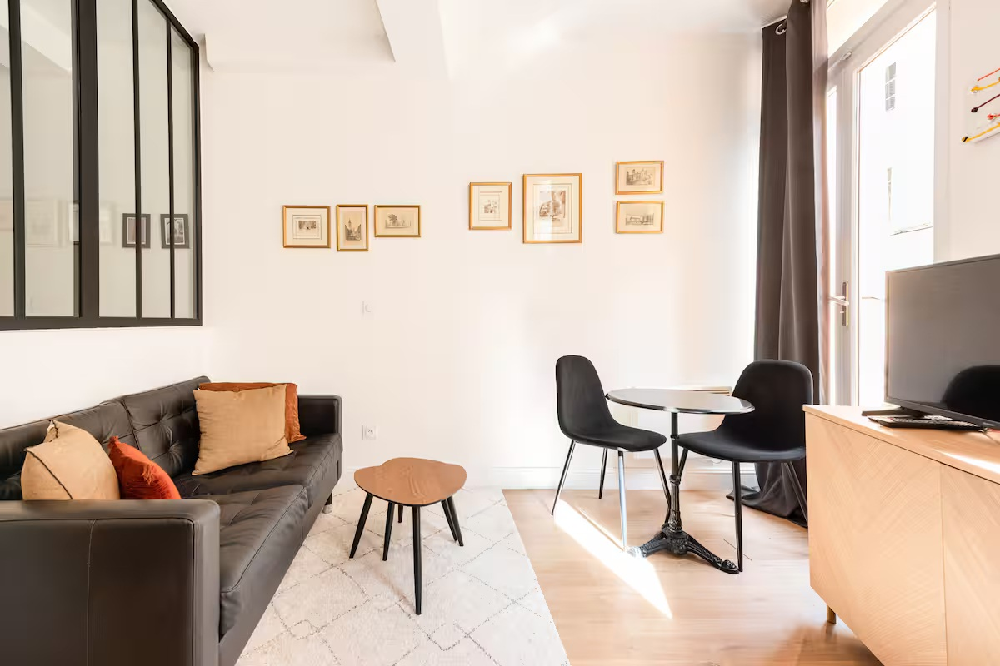

Le Boulegon
Installez-vous dans un studio entierement renove de 26 m2 situe dans le quartier de la Mairie, au coeur du centre-ville historique d'Aix-en-Provence, dans une rue pietonne calme. Tres lumineux, Le Boulegon se distingue par son coin nuit separe par une verriere et par une vraie sensation de confort des l'arrivee.

Le Boulegon combine calme et hyper-centre, avec arrivee autonome par boite a cles, Wi-Fi, television, machine a laver, Nespresso, the et linge de maison fourni. Les voyageurs ont acces a l'appartement entier.
Un studio renove, lumineux et bien pense
La galerie met en avant les vrais atouts du logement: une belle piece de vie, une cuisine ouverte bien equipee, un coin nuit separe par verriere et une salle d'eau moderne, dans un ensemble tres coherent.


Une vraie adresse de centre-ville, calme et tres agreable a vivre
Le Boulegon est pense comme un pied-a-terre complet au coeur d'Aix: un studio compact mais bien distribue, avec un coin nuit separe, une belle hauteur, beaucoup de lumiere et tout le necessaire pour quelques jours comme pour un sejour un peu plus long.
Studio ideal pour 2 voyageurs, en couple, en solo ou pour un court sejour professionnel dans Aix.
Wi-Fi, television, climatisation, chauffage, detecteur de fumee et espace de travail dedie dans une piece avec porte.
Lave-linge gratuit dans le logement, produits de base, fer a repasser et armoire pour les vetements.
Refrigerateur, mini refrigerateur, four, plaques, bouilloire, grille-pain, Nespresso, verres a vin, vaisselle complete et table a manger.
Seche-cheveux, produits de nettoyage et salle d'eau renovee dans un esprit sobre et contemporain.
Boite a cle securisee, logement de plain-pied, arrivee autonome, cafe Nespresso, the et linge de maison fourni.
Le quartier de la Mairie, au coeur du centre historique
Le Boulegon profite d'une adresse tres centrale tout en restant dans une rue pietonne calme. C'est une base ideale pour vivre Aix a pied, profiter des places, des restaurants et des rues anciennes sans perdre la sensation de tranquillite au retour.
Une adresse centrale pour decouvrir Aix a pied
Le Boulegon se situe au 16 rue Boulegon, 13100 Aix-en-Provence, dans une rue pietonne du centre historique. L'emplacement permet de profiter de la ville sans voiture et de rejoindre rapidement les places, commerces et restaurants du coeur d'Aix.
16 rue Boulegon
13100 Aix-en-Provence
Un studio central qui combine calme, lumiere et vraie fonctionnalite
Le Boulegon plait aux voyageurs qui veulent l'hyper-centre sans sacrifier le confort. Son coin nuit separe, sa renovation recente et sa rue pietonne en font une adresse plus desiree qu'un simple studio standard en centre-ville.
Consultez les disponibilites du Boulegon
Le moteur de reservation La Familia permet ensuite de verifier les dates, les tarifs et de finaliser le sejour dans un parcours simple et direct.